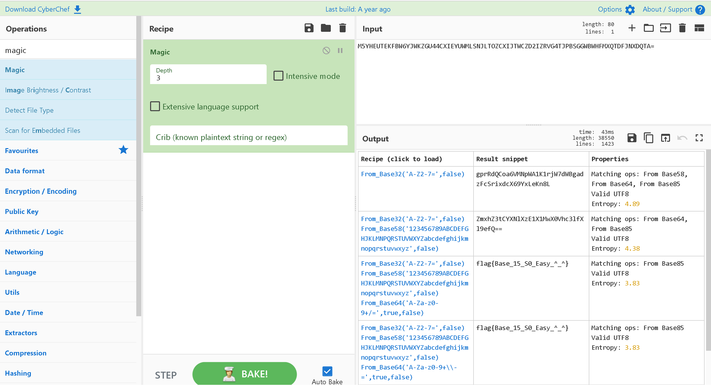
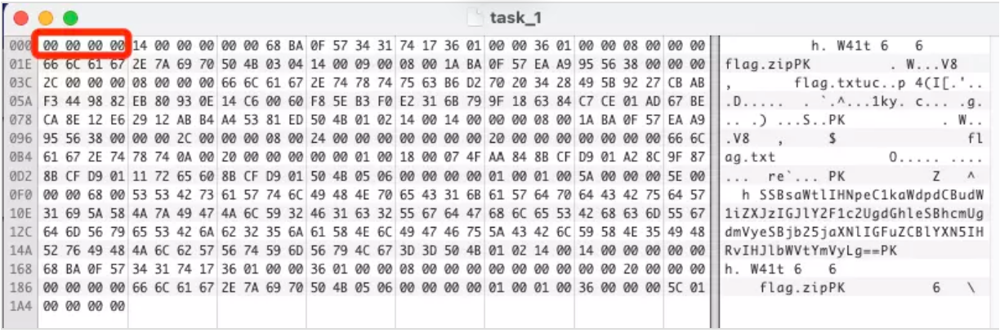
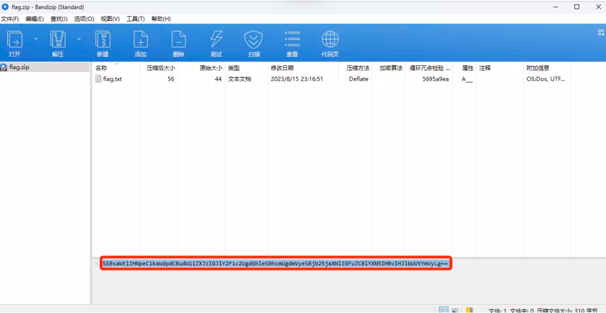
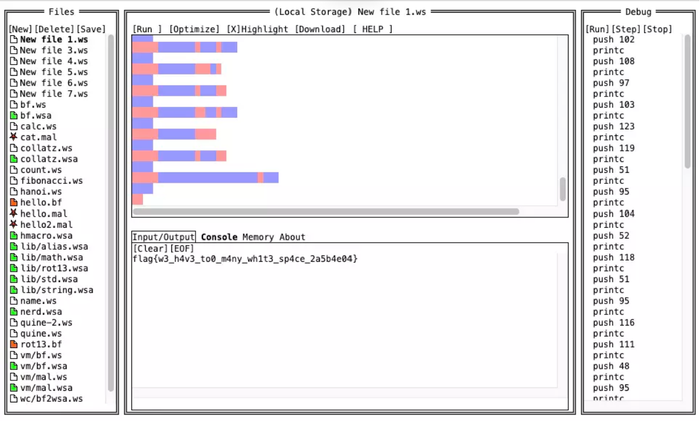
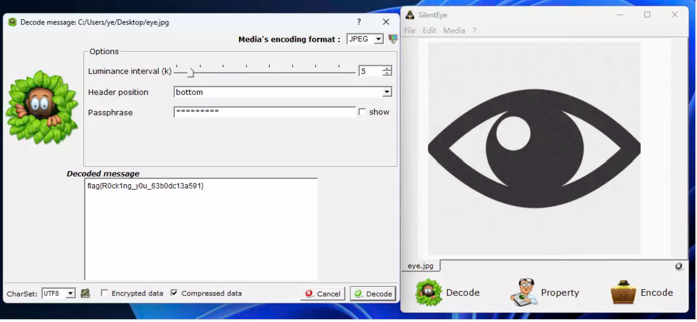

# Misc
# CyberChef's Secret
Sign in！！！
下载压缩文件，解压后得到：
来签到吧！下面这个就是 flag，不过它看起来好像怪怪的:-)
M5YHEUTEKFBW6YJWKZGU44CXIEYUWMLSNJLTOZCXIJTWCZD2IZRVG4TJPBSGGWBWHFMXQTDFJNXDQTA=
这里可以直接使用 ciphey 来进行解密。
具体安装方法可以参考这篇文章：
CTF-Crypto 必备自动解密神器 python-Ciphey（详细安装介绍）
或者使用 cyberchef 中的 magic 来解决：
CyberChef 在线网站

# 机密图片
小宝最近学会了隐写术，并且在图片中藏了一些秘密，你能发现他的秘密吗？
lsb 隐写，使用 StegSolve 工具，点击 "Analyse" -> "Data Extract"，提取最低位信息即可。
# 流量！鲨鱼！
题目中有大量的目录扫描爆破流量，使用 WireShark 过滤器来过滤掉干扰的流量：
http && http.response.code == 200
提取出 HTTP 响应数据：
Wm14aFozdFhjbWt6TldnMGNtdGZNWE5mZFRVelpuVnNYMkkzTW1FMk1EazFNemRsTm4wSwo=
Base64 解码两次得到 Flag
# 压缩包们
常见的压缩包又能玩出什么花样呢？
用 16 进制编辑器打开（01Editor or winhex)
首先要修复文件头，这里列举一些常见的文件头：
JPEG (jpg)，文件头：FF D8 FF | |
PNG (png)，文件头：89 50 4E 47 【参考：png文件头详解】89 50 4e 47 0d 0a 1a 0a | |
GIF (gif)，文件头：47 49 46 38 | |
Windows Bitmap (bmp)，文件头：42 4D [参考：bmp文件格式详解]42 4D 36 0C 30 00 00 00 00 00 36 00 00 00 28 00 00 00 56 05 00 00 00 03 00 00 01 00 18 00 00 00 00 00 00 04 00 00 00 00 00 00 00 00 00 00 00 00 00 00 00 00 00 00 | |
python反编译文件pyc的头：03 F3 0D 0A （实验吧，py的交易会用到） | |
pyd的文件头：4D 5A 90 00 | |
ZIP Archive (zip)，文件头：50 4B 03 04 ascii码部分是PK，可以直接根据PK判断是zip文件，也有可能是doc文件 | |
rar文件: 52 61 72 21 | |
7z文件头：37 7A BC AF 27 1C（实验吧，有趣的文件用到了） | |
MS Word/Excel (xls.or.doc)，文件头：D0CF11E0 | |
CAD (dwg)，文件头：41433130 | |
Adobe Photoshop (psd)，文件头：38425053 | |
Rich Text Format (rtf)，文件头：7B5C727466 | |
XML (xml)，文件头：3C3F786D6C | |
HTML (html)，文件头：68746D6C3E | |
Email [thorough only] (eml)，文件头：44656C69766572792D646174653A | |
Outlook Express (dbx)，文件头：CFAD12FEC5FD746F | |
Outlook (pst)，文件头：2142444E | |
MS Access (mdb)，文件头：5374616E64617264204A | |
WordPerfect (wpd)，文件头：FF575043 | |
Postscript (eps.or.ps)，文件头：252150532D41646F6265 | |
Adobe Acrobat (pdf)，文件头：255044462D312E | |
Quicken (qdf)，文件头：AC9EBD8F | |
Windows Password (pwl)，文件头：E3828596 | |
RAR Archive (rar)，文件头：52617221 | |
Wave (wav)，文件头：57415645 | |
AVI (avi)，文件头：41564920 | |
Real Audio (ram)，文件头：2E7261FD | |
Real Media (rm)，文件头：2E524D46 | |
MPEG (mpg)，文件头：000001BA | |
MPEG (mpg)，文件头：000001B3 | |
Quicktime (mov)，文件头：6D6F6F76 | |
Windows Media (asf)，文件头：3026B2758E66CF11 | |
MIDI (mid)，文件头：4D546864 |

改为 zip 文件头：
50 4B 03 04
保存为 Zip 文件解压得到 flag.zip，flag.zip 解压需要密码并且存在文件注释：

Base64 解码得到提示：I like six-digit numbers because they are very concise and easy to remember.
可以直接使用 ArchPR 或者是 Ziperello 等工具进行 Zip 压缩包密码爆破，格式为六位纯数字，
密码 232311，如果出现压缩包格式错误的问题使用 360 解压或 Unarchiver 等文件容错率较高的软件即可，解压得到 Flag：
# 空白格
WhiteSpace 语言，可以在 https://vii5ard.github.io/whitespace/ 在线运行，运行即可获得 Flag：

# 隐秘的眼睛
使用 SilentEye 工具进行 Decode 即可获得 Flag：
